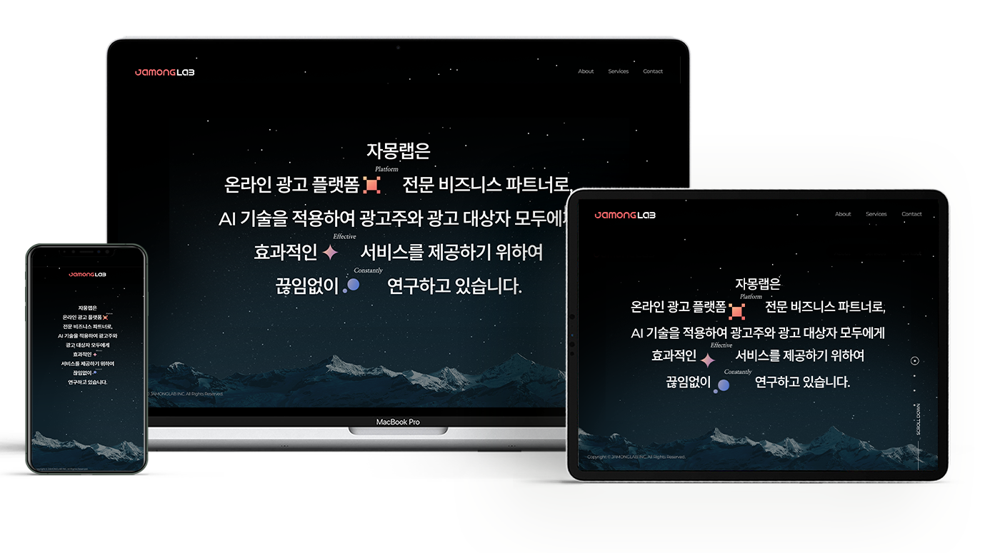

자몽랩
교육 서비스 홈페이지
- #HTML
- #CSS
- #Javascript
- #Fullpage
- #GSAP
- #Canvas API
- #swiper
- #animation
- #4pages
- #All Devices
- #기여도 100%
- #Photoshop
- #Figma

OverView.
※ fullpage.js(2.9.7) + swiper + gsap + canvas api + css animation
전체 페이지를 fullpage(2.9.7 무료버전)을 이용해 섹션 별로 부드럽게 전환될 수 있도록 효과를 주었습니다.
각 섹션 별로 전환시 gsap과 css 애니메이션 효과, swiper 효과를 함께 구현하여 텍스트가 강조될 수 있도록 하였고,
swiper와 fullpage를 함께 사용하는 인트로의 경우,
swiper의 마지막 슬라이드까지 전환되지 않은 경우 fullpage 스크롤과 모바일 touchmove를 disable하여 fullpage섹션이 전환되지 않도록 구현하였습니다.
또한, 브라우저 창이 resize될 때마다 특정 시간 후 새로고침 되도록 스크립트를 이용해 타이머를 설정하였습니다.
Service Info.
메인페이지 (fullpage)
01. section 01
- background : canvas api 이용해 구현
- css 애니메이션을 이용해 텍스트 background 블락 효과 구현
- swiper(horizontal scroll) + gsap을 함께 사용해 2번 슬라이드를 넘기는 시점에 텍스트가 등장하며 background 블락이 사라지는 애니메이션 구현
- swiper의 슬라이드 개수만큼 전환되지 않은 경우 fullpage 스크롤과 touchmove disable 구현
- swiper의 슬라이드가 모두 전환 된 후 fullpage 스크롤과 touchmove enable 구현
02. section 02
- 우측 이미지 : 이미지 회전하는 animation과 canvas api 결합해 구현
- css 애니메이션을 이용해 텍스트 background 블락 효과 구현
- fullpage의 해당 section이 active가 되는 시점에 텍스트가 위로 움직이도록 애니메이션 구현
- fullpage 의 onLeave와 afterLoad 메서드를 이용해 해당 index에 들어올 경우 addclass를 이용해 애니메이션을 실행하도록 구현
- 해당 index를 벗어난 경우 removeClass를 이용해 애니메이션을 초기화
03. section 03
- css 애니메이션을 이용해 텍스트 background 블락 효과 구현
- 태블릿 이하(1025px)부터는 컨텐츠를 swiper 슬라이드로 2개씩 구현
- 모바일 (561px)부터는 컨텐츠를 swiper 슬라이드로 1개씩 나오도록 구현
- fullpage 의 onLeave와 afterLoad 메서드를 이용해 해당 index에 들어올 경우 addclass를 이용해 애니메이션을 실행하도록 구현
- 해당 index를 벗어난 경우 removeClass를 이용해 애니메이션을 초기화
04. section 04
- css 애니메이션을 이용해 텍스트 background 블락 효과 구현
- fullpage의 function에서 index를 이용해 해당 페이지에 올 때 addclass를 이용해
애니메이션을 실행하게 하고, 벗어나면 removeClass를 이용해 애니메이션 초기화
- top 버튼 클릭시 "$.fn.fullpage.moveTo(1);swiper1.slideTo(0);" 이용해 메인 첫 슬라이드로 이동
서브페이지 (fullpage)
01. 메인
- swiper(horizontal scroll)을 사용해 2번 슬라이드를 넘기는 시점에 텍스트가 등장하며 background 블락이 사라지는 애니메이션 구현
- swiper의 슬라이드 개수만큼 전환되지 않은 경우 fullpage 스크롤과 touchmove disable 구현
- swiper의 슬라이드가 모두 전환 된 후 fullpage 스크롤과 touchmove enable 구현
02. 컨텐츠 영역
- swiper(horizontal scroll)사용해 슬라이드를 넘기는 시점에 텍스트가 등장하며 background 블락이 사라지는 애니메이션 +
swiper(horizontal scroll) + css 애니메이션을 함께 사용해 슬라이드를 넘기는 시점에 우측 이미지가 서서히 등장하는 애니메이션(각각 delay 설정) 구현
- 큰 타이틀과 하단 버튼은 absolute로 고정시킨 후 우측 이미지와 작은 타이틀만 전환되도록 레이아웃 설정
Devices.
Work Info.
- 제작 기간
- 2023.12.27 ~ 2024.01.17 (21days)
- 제작 영역
- 사이트 전반 구현
- 사용 툴
- HTML, CSS, Javascript, Figma, Photoshop, Git